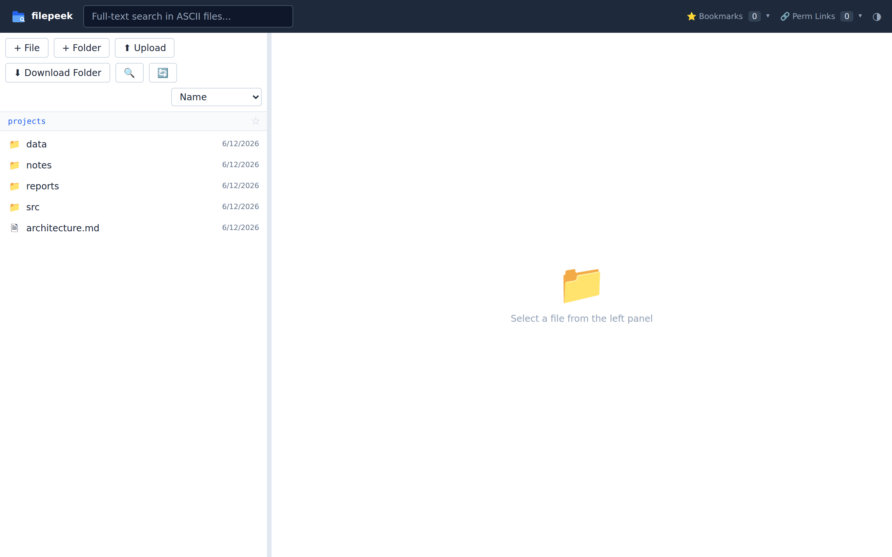
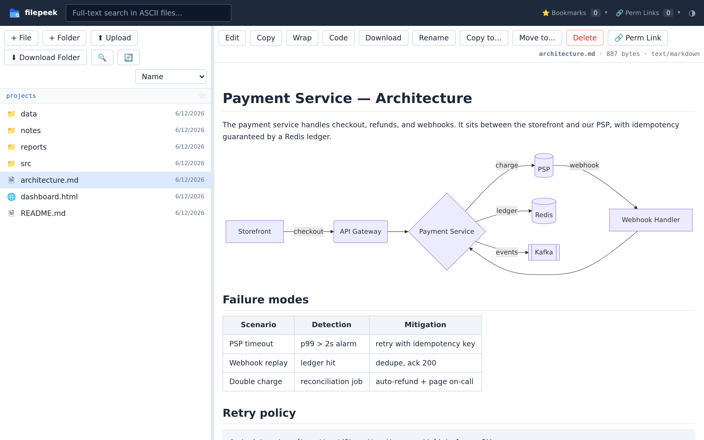
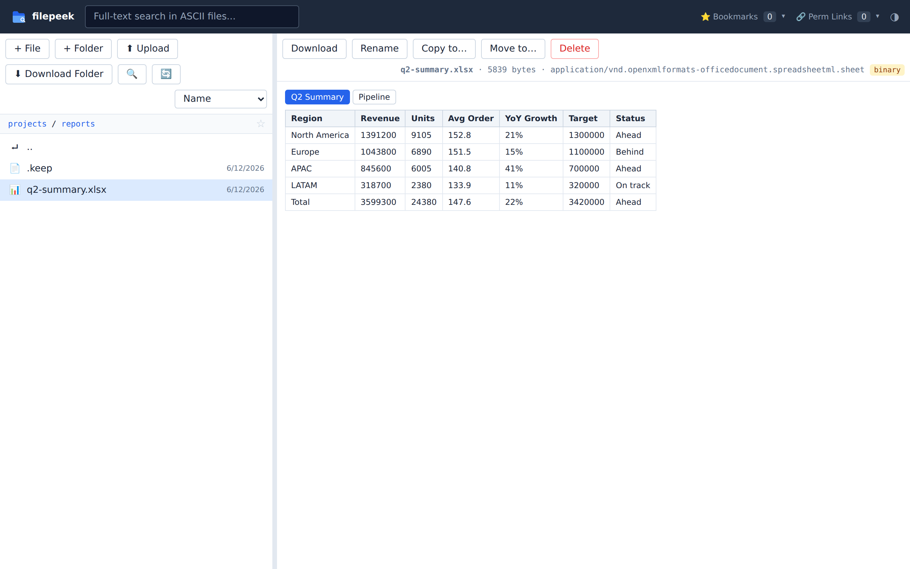
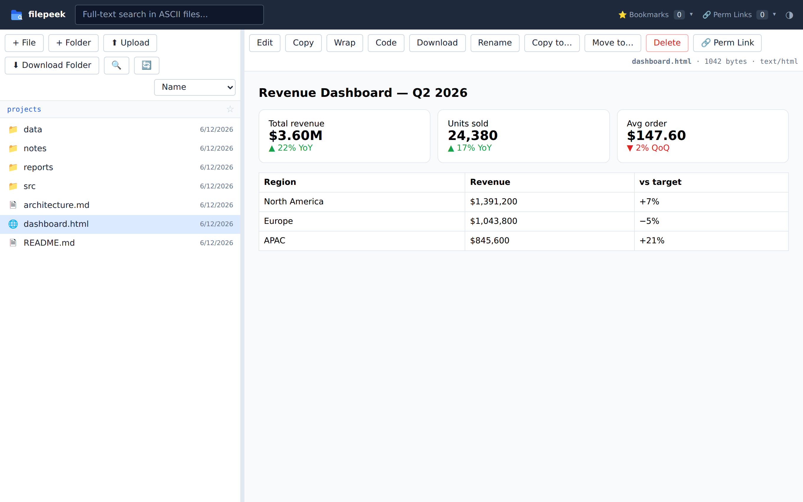
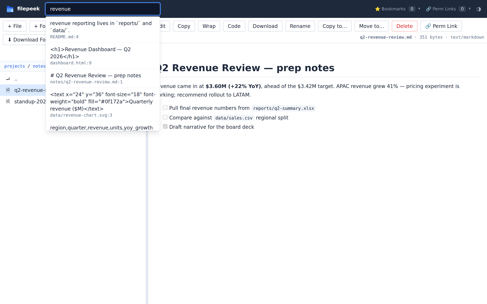
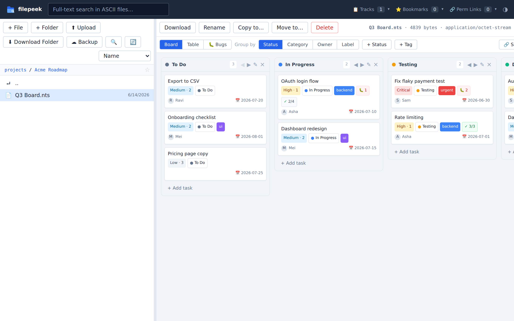

Made for AI coding-agent output
Claude Code, ChatGPT, Cursor, or any coding agent just wrote a pile of .md,
.html, and .xlsx files into your WSL2 or Linux filesystem — and you're
squinting at raw markdown in a terminal. filepeek serves any directory as a browsable web UI
that renders what agents produce, the way it was meant to look.
Why not just open them in VS Code?
VS Code shows you source. filepeek shows you the result — the rendered page your agent meant for a human to read.
| In your editor | In filepeek |
|---|---|
| Raw Markdown source | Rendered Markdown |
| Mermaid as text | Rendered diagrams |
| Excel needs an extension | Opens directly, sheet by sheet |
| HTML as source | Interactive, clickable page |
| Hard to share a view | A URL for every file |
| Tied to your desktop | Works from any browser, including mobile |
What it renders
📝 Markdown + Mermaid
AI-written docs, plans, and reports rendered with tables, code blocks, and Mermaid diagrams.
📊 Excel, Word, PowerPoint
View xlsx, docx, and pptx in the browser — no Microsoft Office, no LibreOffice, no upload.
🌐 HTML pages
Agent-built dashboards and mockups served directly, ready to click through.
💻 Code & data
~60 languages, CSV/TSV as sortable tables, SVG, and PDFs inline.
🖼️ Images, video & audio
View PNG/JPG/GIF/WebP, play mp4/webm/mov video and mp3/wav audio — inline, no download.
🔍 Search & organize
Filename and full-text search, bookmarks, and a bookmarkable URL for every folder and file.
🔐 Self-hosted & private
Your files never leave your machine. Optional HTTPS + password mode for cloud servers and Tailscale.
See it in action





Bonus
🗂️ Organize work with built-in task boards
Already pointing filepeek at your project? Any .nts file opens as an interactive
task board — kanban, table, and bugs views with owners, labels, priorities, and checklists.
The board is plain JSON saved back to the file: versionable, portable, no database.

.nts fileBonus
☁️ Protect files with built-in backup
Back up chosen folders (or everything) to a local/NAS path or any S3-compatible cloud — Backblaze B2, Wasabi, Cloudflare R2, AWS — on a schedule or on demand. Cloud setup is four pasted values. Copy mode never deletes; an advanced mirror mode is gated behind a preview and a typed confirmation.
Quick start
git clone https://github.com/thrinz/filepeek && cd filepeek
./install.sh
FILEPEEK_ROOT=~/projects .venv/bin/python app.pyOpen http://localhost:8765. On WSL2 that URL works directly in your Windows browser.
One Python file, one HTML file, no database. Need a different port? Set
FILEPEEK_PORT=9000 (or pass --port 9000).
Frequently asked questions
How do I view the Markdown files Claude Code or ChatGPT generates?
Point filepeek at the folder your agent writes to (FILEPEEK_ROOT=~/projects) and open
localhost:8765 — every Markdown file renders with formatting, tables, code blocks, and Mermaid
diagrams instead of raw text.
Can I open xlsx, docx, or pptx files without Microsoft Office?
Yes. filepeek renders Excel workbooks (per-sheet tables), Word documents, and PowerPoint slides directly in the browser using pure Python.
Does it work on WSL2?
That's the home turf — run it inside WSL2 and open localhost:8765 in your Windows browser. Localhost forwarding is automatic.
Is my data sent anywhere?
No. filepeek is fully self-hosted and reads files straight off your disk.
Can filepeek back up my files?
Yes — built in. Back up selected folders (or everything) to a local/NAS folder or any S3-compatible cloud (AWS, Backblaze B2, Wasabi, Cloudflare R2, MinIO) on a schedule or on demand. Cloud setup is four pasted values — no provider console app. Copy mode never deletes; an advanced mirror mode is gated behind a preview and a typed confirmation.
What are Track boards (.nts files)?
Any .nts file opens as an interactive task board — kanban, table, and bugs views
with owners, labels, priorities, checklists, and per-task bug tracking. The board is plain
JSON saved back to the file, so it's versionable and portable, with no database.
Is it free?
Yes — free and open source under the MIT license.